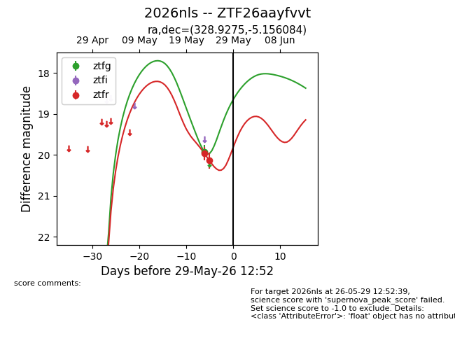
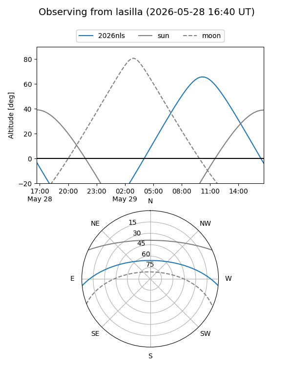
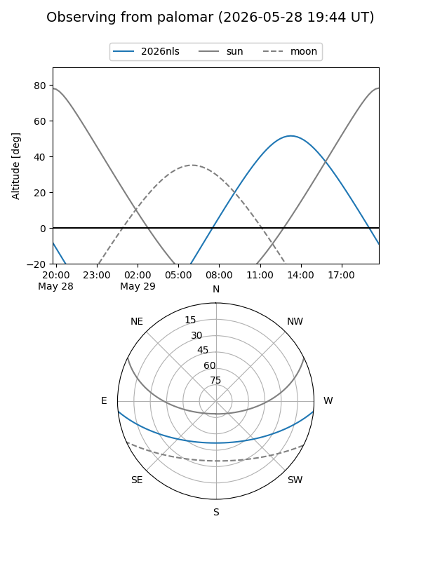
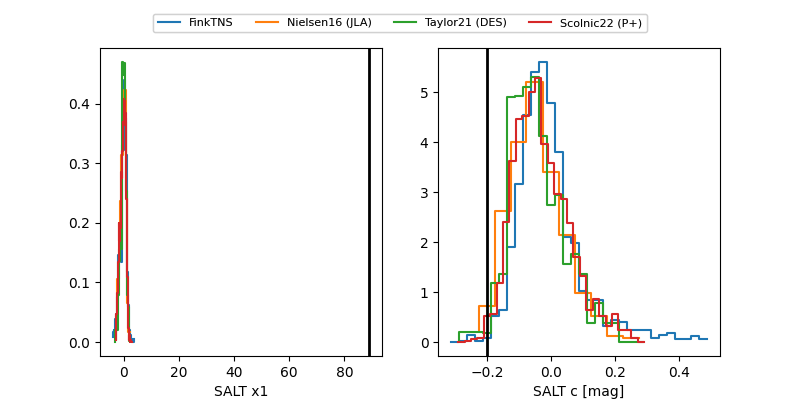

2026nls
Target 2026nls at 2026-05-29 12:54
Aliases and brokers:
lsst-FINK: link
lsst-Lasair: link
lsst-ALeRCE: link
ztf-FINK: link
ztf-Lasair: link
ztf-ALeRCE: link
TNS: link
YSE: link
alt names
ZTF26aayfvvt (ztf,fink_ztf)
2026nls (tns,yse)
Coordinates:
equatorial (ra, dec) = 328.9275,-5.15608
equatorial (HMS+DMS) = 21:55:42.59,-05:09:21.90
galactic (l, b) = (52.6069,-42.79073)
Flags:
TNS confirmed: nan
Photometry:
last ztfg=19.94, ztfr=20.14
1 ztfg, 2 ztfr detections
Lightcurve

Visibility


Additional plots
